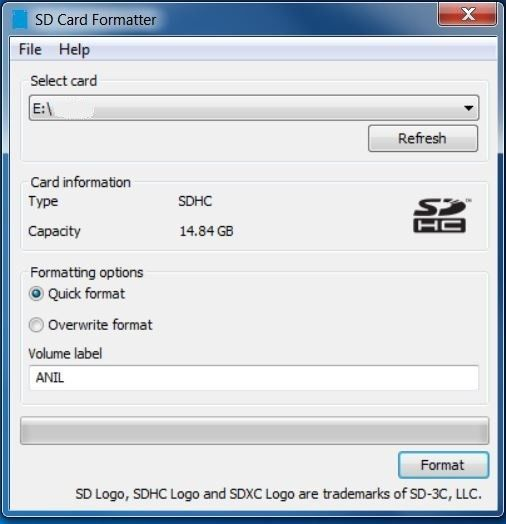

Versal Prime - VCK190 Evaluation Kit Ethernet TRD Tutorial |
Board Setup and Application Deployment |
Setting up the Board and Application Deployment¶
Introduction¶
This document shows how to set up the board and run the Ethernet TRD application with prebuilt images.
Prerequisites¶
Reference design
vck190_ethernet_trd_prebuilt_2023.2.zipfileVCK190 Evaluation Board
Terminal emulator, for example:
Windows: teraterm (https://osdn.net/projects/ttssh2)
Linux: picocom (https://github.com/npat-efault/picocom/releases)
Disk Imager utility, for example
Host Machine with 10G/25G capable NIC
100G QSFP28 to 4 x 25G SFP28 cable (Board to 10/25G NIC setup)
100G QSFP28 to 100G QSFP28 Cable (Board to Board Setup)
Iperf3 application
ptp4l application
Board Setup¶
The following figure shows how to set up the VCK190 evaluation board.

Board jumper and switch settings
This is a one-time setup and the board should have been delivered to you with this default setting, however it is good to double check for the first time when you get the board.
Make sure you remove J326 (7-8) jumper.
Setup SYSCTRL Boot mode switch SW11 to (ON,OFF,OFF,OFF) from switch bits 1 to 4 as shown in the above picture.
Make sure you have the uSD card with the SYSCTRL image inserted in the uSD SysCtrl slot.
It is recommended to use the latest SYSCTRL image.
Setup Versal Boot Mode switch SW1 to (ON,OFF,OFF,OFF) from switch bits 1 to 4 as shown in the above picture.
External NIC to VCK190 connection
Connect a QSFP to SFP cable from VCK190 QSFP Port (J288) to Host Machine NIC SFP Port.
Serial console settings
VCK190 comes with a USB-C connector for JTAG+UART, when connected three UART ports should be visible in Device Manager:
Versal UART0
Versal UART1 &
System Controller UART
Connect a USB-C cable to the USB-UART connector. In a terminal emulator, connect to Versal UART0 using the following settings:
Baud Rate: 115200
Data: 8 bit
Parity: None
Stop: 1 bit
Flow Control: None
Flash the SD Card¶
Download the 2023.2 Pre-Built Package from TRD Home Page , unzip and save it on your computer.
Navigate to the directory containing the prebuilt images
../vck190_ethernet_trd_prebuilt_2023.2Connect the microSD to your computer.
Preparing the SD card, there are many options to format the SD Card in the windows tool. But, always format with FAT32 option. Use the SD Card Formatter tool to format the SD card SD Card Formatter
.
Copy
BOOT.BIN , rootfs.cpio.gz.uboot , Image and boot.scrto microSD card.Eject the SD card from your computer.
Connect the microSD card to the Board.
SD Boot mode:¶
Power on the board in SD boot mode.
GT Reference clocks¶
The GT Reference clocks required for the design are configured by the IDT drivers.
NOTE: Board UI is not required from 2022.1 release.
Run Host and VCK190 applications¶
Once the host and VCK190 are booted, set up an IP address for each ethernet port and make sure the Ethernet link is established using ping. Do not proceed until you are able to ping each interface.
>ifconfig <interface_name> down
>ifconfig <interface_name> <ip_address> up
NOTE: While making the interface up, make sure a valid IP address is set for the interface.
Iperf Commands¶
NOTE: The performance on 10G/25G interfaces with Linux stack in the data path is limited by the CPU processing power. Hence performance cannot be expected to meet line rate. There are alternatives to reduce the load on the processors by offloading SW functions to PL or bypassing Linux stack. The intention of this reference is to establish a working solution with a data plane driver, including PTP functionality.
TCP TX¶
Link Patner (Host NIC):
Execute the following command to start two threads of iperf3 server
iperf3 -s -p <port_no_x> -i 60 &
iperf3 -s -p <port_no_y> -i 60 &
Board:
Execute the following command to start iperf3 client, this will start two threads of iperf traffic.
MTU 1500:
taskset -c 1 iperf3 -c <Link-partner-IP> -T s1 -p <port_no_x> -t 60 -i 60 -b 2500M &
taskset -c 1 iperf3 -c <Link-partner-IP> -T s2 -p <port_no_y> -t 60 -i 60 -b 2500M &
MTU 9000:
taskset -c 1 iperf3 -c <Link-partner-IP> -T s1 -p <port_no_x> -t 60 -i 60 -b 5000M &
taskset -c 1 iperf3 -c <Link-partner-IP> -T s2 -p <port_no_y> -t 60 -i 60 -b 5000M &
UDP TX¶
Link Patner (Host NIC):
Execute the following command to start two threads of iperf3 server
iperf3 -s -p <port_no_x> -i 60 &
iperf3 -s -p <port_no_y> -i 60 &
Board:
Execute the following command to start iperf3 client, this will start iperf traffic on two processors.
MTU 1500:
taskset -c 0 iperf3 -c <Link-partner-IP> -T s1 -u -p <port_no_x> -t 60 -i 60 -b 2500M &
taskset -c 1 iperf3 -c <Link-partner-IP> -T s2 -u -p <port_no_y> -t 60 -i 60 -b 2500M &
MTU 9000:
taskset -c 0 iperf3 -c <Link-partner-IP> -T s1 -u -p <port_no_x> -t 60 -i 60 -b 5000M &
taskset -c 1 iperf3 -c <Link-partner-IP> -T s2 -u -p <port_no_y> -t 60 -i 60 -b 5000M &
TCP RX¶
Pre-requisites:
For Rx tests, run the following commands initially on the VCK190 board
ifconfig <interface-name> down
ethtool -G <interface-name> rx 1024
ethtool -C <interface-name> tx-frames 24 rx-frames 24
ifconfig <interface-name> <ip_address> up
Board:
Execute the following command to start iperf3 server on two processors
taskset -c 0 iperf3 -s -p <port_no_x> -i 60 &
taskset -c 1 iperf3 -s -p <port_no_y> -i 60 &
Link Partner (Host NIC):
Execute the following command to start iperf3 client, this will start two threads of iperf traffic.
MTU 1500:
iperf3 -c <Link-partner-IP> -T s1 -p <port_no_x> -t 60 -i 60 -b 2500M -Z -w 256k &
iperf3 -c <Link-partner-IP> -T s2 -p <port_no_y> -t 60 -i 60 -b 2500M -Z -w 256k &
MTU 9000:
iperf3 -c <Link-partner-IP> -T s1 -p <port_no_x> -t 60 -i 60 -b 5000M -Z -w 256k &
iperf3 -c <Link-partner-IP> -T s2 -p <port_no_y> -t 60 -i 60 -b 5000M -Z -w 256k &
UDP RX¶
Board:
Execute the following command to start iperf3 server on two processors
taskset -c 0 iperf3 -s -p <port_no_x> -i 60 &
taskset -c 1 iperf3 -s -p <port_no_y> -i 60 &
Link Partner (Host NIC):
Execute the following command to start iperf3 client, this will start two threads of iperf traffic.
MTU 1500:
iperf3 -c <Link-partner-IP> -T s1 -u -p <port_no_x> -t 60 -i 60 -b 2500M -Z &
iperf3 -c <Link-partner-IP> -T s2 -u -p <port_no_y> -t 60 -i 60 -b 2500M -Z &
MTU 9000:
iperf3 -c <Link-partner-IP> -T s1 -u -p <port_no_x> -t 60 -i 60 -b 5000M -Z &
iperf3 -c <Link-partner-IP> -T s2 -u -p <port_no_y> -t 60 -i 60 -b 5000M -Z &
PTP commands¶
Two Step PTP¶
Run ptp4l in master mode:
Link partner > ptp4l -i <interface_name> -m &
or vice versa
ptp4l master side log:
Link partner > ptp4l -i eth0 -m &
ptp4l[18601.779]: selected /dev/ptp1 as PTP clock
ptp4l[18601.780]: port 1: INITIALIZING to LISTENING on INIT_COMPLETE
ptp4l[18601.780]: port 0: INITIALIZING to LISTENING on INIT_COMPLETE
ptp4l[18601.780]: port 0: INITIALIZING to LISTENING on INIT_COMPLETE
ptp4l[18609.021]: port 1: LISTENING to MASTER on ANNOUNCE_RECEIPT_TIMEOUT_EXPIRES
ptp4l[18609.021]: selected local clock 000f53.fffe.9b2dd0 as best master
ptp4l[18609.021]: port 1: assuming the grand master role
Run ptp4l in slave mode:
vck190 > ptp4l -i <interface_name> -m -s &
or vice versa
ptp4l frequency synchronization slave side log:
vck190 > ptp4l -i eth0 -s -m &
ptp4l[9678.643]: selected /dev/ptp1 as PTP clock
ptp4l[9678.657]: port 1: INITIALIZING to LISTENING on INIT_COMPLETE
ptp4l[9678.657]: port 0: INITIALIZING to LISTENING on INIT_COMPLETE
ptp4l[9682.932]: port 1: new foreign master 000f53.fffe.9b2dd0-1
ptp4l[9685.824]: selected local clock 000a35.fffe.000000 as best master
ptp4l[9686.932]: selected best master clock 000f53.fffe.9b2dd0
ptp4l[9686.932]: port 1: LISTENING to UNCALIBRATED on RS_SLAVE
ptp4l[9688.932]: master offset -12219001336 s0 freq +0 path delay -90
ptp4l[9689.932]: master offset -12219000514 s1 freq +822 path delay -164
ptp4l[9690.932]: master offset -40 s2 freq +782 path delay -164
ptp4l[9690.932]: port 1: UNCALIBRATED to SLAVE on MASTER_CLOCK_SELECTED
ptp4l[9691.932]: master offset -78 s2 freq +732 path delay -164
ptp4l[9692.932]: master offset -201 s2 freq +586 path delay -27
ptp4l[9693.932]: master offset -63 s2 freq +663 path delay -8
ptp4l[9694.932]: master offset 11 s2 freq +718 path delay -1
ptp4l[9695.932]: master offset 36 s2 freq +747 path delay -1
ptp4l[9696.932]: master offset 23 s2 freq +744 path delay 10
ptp4l[9697.932]: master offset 23 s2 freq +751 path delay 10
ptp4l[9698.932]: master offset 6 s2 freq +741 path delay 22
ptp4l[9699.932]: master offset 0 s2 freq +737 path delay 28
ptp4l[9700.932]: master offset 8 s2 freq +745 path delay 28
ptp4l[9701.932]: master offset -4 s2 freq +735 path delay 38
ptp4l[9702.932]: master offset 2 s2 freq +740 path delay 37
ptp4l[9703.932]: master offset 7 s2 freq +746 path delay 37
ptp4l[9704.932]: master offset 3 s2 freq +744 path delay 38
ptp4l[9705.932]: master offset 6 s2 freq +748 path delay 38
ptp4l[9706.932]: master offset -1 s2 freq +743 path delay 39
ptp4l[9707.932]: master offset -2 s2 freq +741 path delay 39
ptp4l[9708.932]: master offset 2 s2 freq +745 path delay 39
ptp4l[9709.932]: master offset 2 s2 freq +745 path delay 39
Note: For more details refer Linux PTP Project source files and Documentation
One Step PTP¶
NOTE: Another vck190 board with Xilinx PHC is used as Link partner to test the one step PTP use cases.
PTP with 1 step End-to-end (E2E):
Link partner> ptp4l -i <interface_name> -m -f /usr/bin/default_onestep.cfg &
VCK190> ptp4l -i eth0 -s -m -f /usr/bin/default_onestep.cfg &
or vice versa
ptp4l master side log:
Link partner > ptp4l -i eth0 -m -f /usr/bin/default_onestep.cfg &
ptp4l[185.138]: selected /dev/ptp1 as PTP clock
xilinx-vck190-20232:/home/petalinux# ptp4l[185.148]: port 1: INITIALIZING to LISTENING on INIT_COMPLETE
ptp4l[185.149]: port 0: INITIALIZING to LISTENING on INIT_COMPLETE
ptp4l[193.041]: port 1: LISTENING to MASTER on ANNOUNCE_RECEIPT_TIMEOUT_EXPIRES
ptp4l[193.041]: selected local clock 000b35.fffe.000000 as best master
ptp4l[193.041]: port 1: assuming the grand master role
ptp4l frequency synchronization slave side log:
vck190 > ptp4l -i eth0 -s -m -f /usr/bin/default_onestep.cfg &
ptp4l[189.909]: selected /dev/ptp1 as PTP clock
ptp4l[189.917]: port 1: INITIALIZING to LISTENING on INIT_COMPLETE
ptp4l[189.918]: port 0: INITIALIZING to LISTENING on INIT_COMPLETE
ptp4l[196.071]: port 1: new foreign master 000b35.fffe.000000-1
ptp4l[197.649]: selected local clock 000a35.fffe.000000 as best master
ptp4l[200.071]: selected best master clock 000b35.fffe.000000
ptp4l[200.071]: port 1: LISTENING to UNCALIBRATED on RS_SLAVE
ptp4l[202.070]: master offset -1695996497901908938 s0 freq +0 path delay 78
ptp4l[203.070]: master offset -1695996497901908746 s1 freq +192 path delay 78
ptp4l[204.070]: master offset 39 s2 freq +231 path delay 78
ptp4l[204.071]: port 1: UNCALIBRATED to SLAVE on MASTER_CLOCK_SELECTED
ptp4l[205.070]: master offset -1 s2 freq +203 path delay 78
ptp4l[206.070]: master offset -59 s2 freq +144 path delay 121
ptp4l[207.070]: master offset -19 s2 freq +167 path delay 115
ptp4l[208.070]: master offset 27 s2 freq +207 path delay 110
ptp4l[209.071]: master offset 7 s2 freq +195 path delay 115
ptp4l[210.071]: master offset 3 s2 freq +193 path delay 115
ptp4l[211.070]: master offset -6 s2 freq +185 path delay 121
ptp4l[212.071]: master offset 3 s2 freq +192 path delay 119
ptp4l[213.071]: master offset -2 s2 freq +188 path delay 120
ptp4l[214.071]: master offset 5 s2 freq +195 path delay 120
ptp4l[215.071]: master offset 2 s2 freq +193 path delay 120
ptp4l[216.071]: master offset 0 s2 freq +192 path delay 120
ptp4l[217.071]: master offset 2 s2 freq +194 path delay 120
ptp4l[218.071]: master offset -2 s2 freq +190 path delay 121
ptp4l[219.071]: master offset -1 s2 freq +191 path delay 121
ptp4l[220.071]: master offset 1 s2 freq +192 path delay 120
PTP Peer-to-peer (P2P) with 1 step Sync:
Link partner> ptp4l -i <interface_name> -m -f /usr/bin/default_onestep.cfg -P &
VCK190> ptp4l -i eth0 -s -m -f /usr/bin/default_onestep.cfg -P &
or vice versa
ptp4l master side log:
Link partner > ptp4l -i eth0 -m -f /usr/bin/default_onestep.cfg -P &
ptp4l[396.343]: selected /dev/ptp1 as PTP clock
ptp4l[396.353]: port 1: INITIALIZING to LISTENING on INIT_COMPLETE
ptp4l[396.353]: port 0: INITIALIZING to LISTENING on INIT_COMPLETE
ptp4l[403.833]: port 1: LISTENING to MASTER on ANNOUNCE_RECEIPT_TIMEOUT_EXPIRES
ptp4l[403.833]: selected local clock 000b35.fffe.000000 as best master
ptp4l[403.833]: port 1: assuming the grand master role
ptp4l frequency synchronization slave side log:
vck190 > ptp4l -i eth0 -s -m -f /usr/bin/default_onestep.cfg -P &
ptp4l[412.566]: selected /dev/ptp1 as PTP clock
ptp4l[412.577]: port 1: INITIALIZING to LISTENING on INIT_COMPLETE
ptp4l[412.577]: port 0: INITIALIZING to LISTENING on INIT_COMPLETE
ptp4l[412.863]: port 1: new foreign master 000b35.fffe.000000-1
ptp4l[416.863]: selected best master clock 000b35.fffe.000000
ptp4l[416.863]: port 1: LISTENING to UNCALIBRATED on RS_SLAVE
ptp4l[417.862]: master offset 83 s0 freq +193 path delay 120
ptp4l[418.862]: master offset 85 s2 freq +195 path delay 120
ptp4l[418.862]: port 1: UNCALIBRATED to SLAVE on MASTER_CLOCK_SELECTED
ptp4l[419.862]: master offset 84 s2 freq +279 path delay 120
ptp4l[420.862]: master offset -3 s2 freq +217 path delay 120
ptp4l[421.862]: master offset -19 s2 freq +200 path delay 120
ptp4l[422.862]: master offset -24 s2 freq +190 path delay 120
ptp4l[423.863]: master offset -19 s2 freq +187 path delay 120
ptp4l[424.863]: master offset -11 s2 freq +190 path delay 120
ptp4l[425.863]: master offset -5 s2 freq +192 path delay 120
ptp4l[426.863]: master offset -3 s2 freq +193 path delay 120
ptp4l[427.863]: master offset -1 s2 freq +194 path delay 120
ptp4l[428.863]: master offset 0 s2 freq +195 path delay 120
ptp4l[429.863]: master offset -1 s2 freq +194 path delay 120
PTP P2P with 1 step Sync and 1 step Pdelay Response:
Link partner> ptp4l -i <interface_name> -m -f /usr/bin/default_onestepp2p.cfg &
VCK190> ptp4l -i eth0 -s -m -f /usr/bin/default_onestepp2p.cfg &
or vice versa
ptp4l master side log:
Link partner > ptp4l -i eth0 -m -f /usr/bin/default_onestepp2p.cfg &
ptp4l[77665.163]: selected /dev/ptp1 as PTP clock
ptp4l[77665.173]: port 1: INITIALIZING to LISTENING on INIT_COMPLETE
ptp4l[77665.173]: port 0: INITIALIZING to LISTENING on INIT_COMPLETE
ptp4l[77671.630]: port 1: LISTENING to MASTER on ANNOUNCE_RECEIPT_TIMEOUT_EXPIRES
ptp4l[77671.630]: selected local clock 000b35.fffe.000000 as best master
ptp4l[77671.630]: port 1: assuming the grand master role
ptp4l frequency synchronization slave side log:
vck190 > ptp4l -i eth0 -s -m -f /usr/bin/default_onestepp2p.cfg &
ptp4l[77664.802]: selected /dev/ptp1 as PTP clock
port 1: INITIALIZING to LISTENING on INIT_COMPLETE
ptp4l[77664.813]: port 0: INITIALIZING to LISTENING on INIT_COMPLETE
ptp4l[77666.799]: port 1: new foreign master 000b35.fffe.000000-1
ptp4l[77670.799]: selected best master clock 000b35.fffe.000000
ptp4l[77670.799]: port 1: LISTENING to UNCALIBRATED on RS_SLAVE
ptp4l[77671.798]: master offset 47 s0 freq +171 path delay 201
ptp4l[77672.798]: master offset 46 s2 freq +170 path delay 202
ptp4l[77672.798]: port 1: UNCALIBRATED to SLAVE on MASTER_CLOCK_SELECTED
ptp4l[77673.798]: master offset 49 s2 freq +219 path delay 201
ptp4l[77674.798]: master offset 2 s2 freq +187 path delay 201
ptp4l[77675.798]: master offset -14 s2 freq +171 path delay 201
ptp4l[77676.798]: master offset -13 s2 freq +168 path delay 201
ptp4l[77677.798]: master offset -9 s2 freq +168 path delay 201
ptp4l[77678.798]: master offset -6 s2 freq +169 path delay 201
ptp4l[77679.798]: master offset -3 s2 freq +170 path delay 201
ptp4l[77680.798]: master offset -5 s2 freq +167 path delay 201
ptp4l[77681.799]: master offset 4 s2 freq +174 path delay 201
ptp4l[77682.799]: master offset 1 s2 freq +173 path delay 201
ptp4l[77683.799]: master offset 0 s2 freq +172 path delay 201
ptp4l[77684.799]: master offset -2 s2 freq +170 path delay 202
ptp4l[77685.799]: master offset 0 s2 freq +171 path delay 202
ptp4l[77686.799]: master offset 1 s2 freq +172 path delay 202
ptp4l[77687.799]: master offset 0 s2 freq +172 path delay 202
ptp4l[77688.799]: master offset -2 s2 freq +170 path delay 202
ptp4l[77689.799]: master offset 4 s2 freq +175 path delay 202
ptp4l[77690.799]: master offset 1 s2 freq +173 path delay 202
ptp4l[77691.799]: master offset 0 s2 freq +172 path delay 202
ptp4l[77692.799]: master offset 0 s2 freq +172 path delay 201
Dynamic switching between 10G <-> 25G¶
NOTE: By default the interface links up at 25G.
NOTE: a) For dynamic switching between 10G/25G speed, make sure autonegotiation is ON for the particular interface on the NIC side. Example command to switch ON autonegotiation is: ethtool -s <interface_name> speed <10000/25000> autoneg on b) After switching, please expect a delay (~2s) for MRMAC block lock to complete and Link to be detected. c) If the block lock does not happen- immediately, try making the interface down and up to achieve block lock.
To switch between 25G to 10G speed and vice versa dynamically use the following commands:
25G -> 10G:¶
>ifconfig <interface_name> down
>ethtool -s <interface_name> speed 10000
>ifconfig <interface_name> <ip_address> up
10G -> 25G:¶
>ifconfig <interface_name> down
>ethtool -s <interface_name> speed 25000
>ifconfig <interface_name> <ip_address >up
NOTE: Switch the rate in the NIC side first and then on the board side.
Next Steps¶
Go back to the VCK190 Ethernet TRD design start page
License¶
Licensed under the Apache License, Version 2.0 (the “License”); you may not use this file except in compliance with the License.
You may obtain a copy of the License at http://www.apache.org/licenses/LICENSE-2.0
Unless required by applicable law or agreed to in writing, software distributed under the License is distributed on an “AS IS” BASIS, WITHOUT WARRANTIES OR CONDITIONS OF ANY KIND, either express or implied. See the License for the specific language governing permissions and limitations under the License.
Copyright © 2023 Advanced Micro Devices, Inc